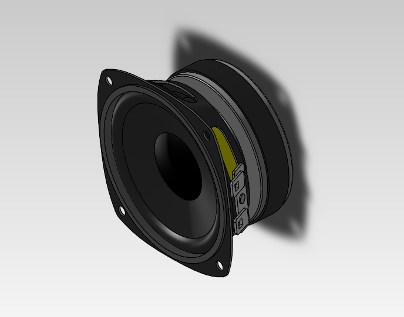
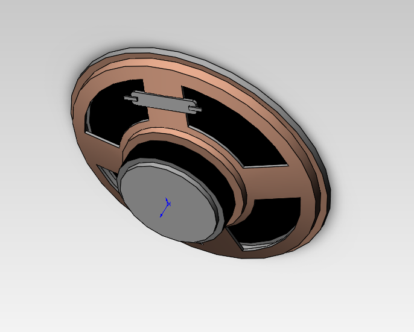
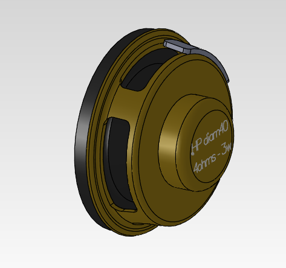
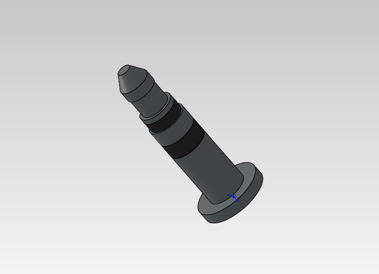
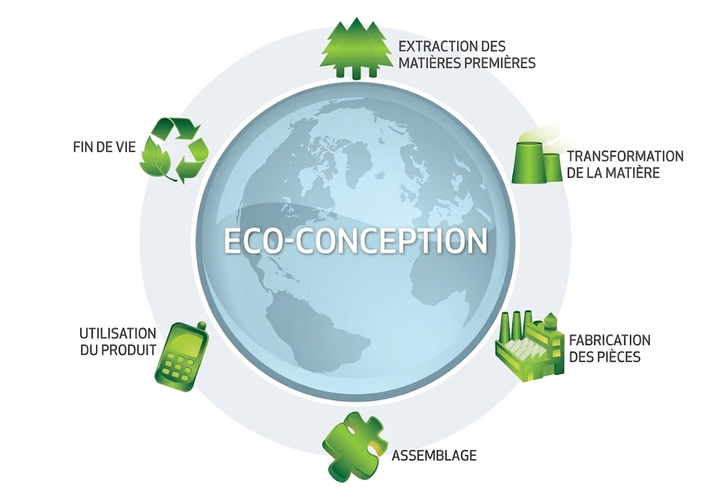
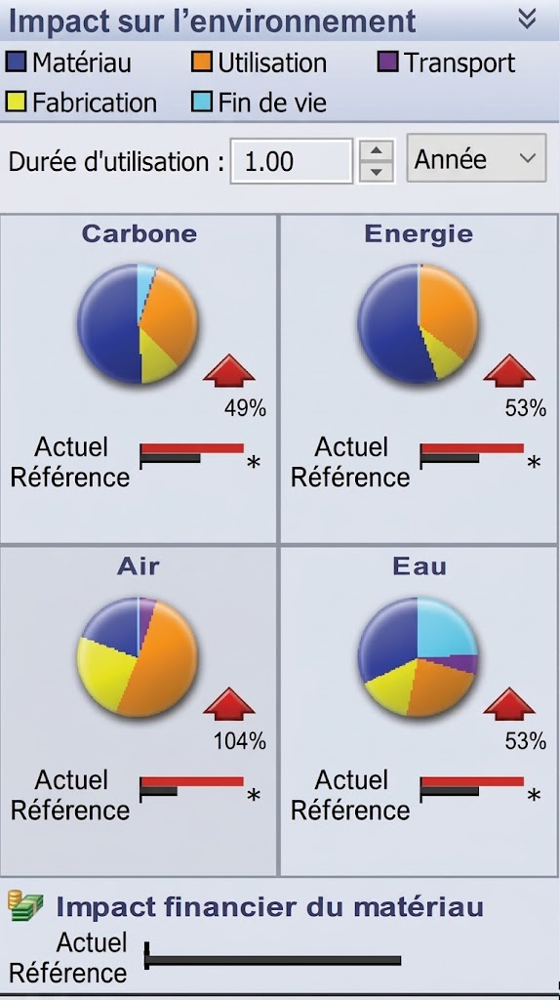
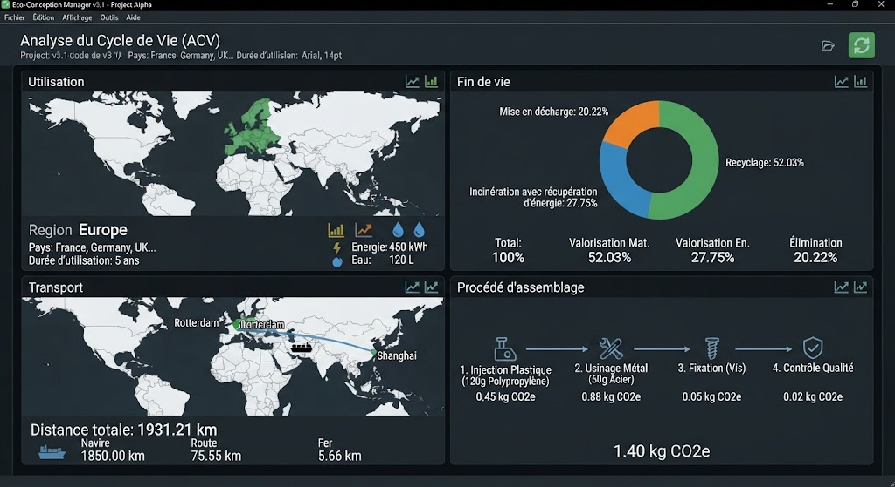

Accueil · Étape 5 sur 6
Étape 5
Modéliser la station et son impact environnemental
Les fichiers SW des haut-parleurs et de la prise jack sont fournis : vous les assemblez à votre station.
Outil Fiches outils SW, fichiers de séquence d'activité et vidéo de création d'eDrawing · dossier fiches outils / Fiche outils SW
Niveau
À faire, pas à pas
- Reprendre votre idée choisie à l'étape 4 et les cotes relevées à l'étape 2.
- Modéliser la pièce principale de la station : esquisse, cotes, volume.
- Ouvrir les fichiers fournis (haut-parleurs, prise jack) et préparer l'assemblage.
- Assembler les haut-parleurs et la prise jack à votre station.
- Personnaliser la station d'accueil pour la rendre plus esthétique et attractive : choisir une forme, une couleur, une finition ou des éléments décoratifs qui renforcent l'aspect visuel et marketing du produit, selon le cahier des charges fonctionnel.
- Lancer l'étude d'impact environnemental (analyse du cycle de vie), puis modifier les paramètres pour l'améliorer.
- Enregistrer l'assemblage au format eDrawing et préparer la vue de présentation destinée au service commercial.
- Repérer les cotes et formes fonctionnelles pour l'assemblage avec l'iPod, lister les points forts, puis faire contrôler.
Dans le dossier
Pages 5 et 6Copie de la modélisation SW de la stationPersonnalisation esthétique et attractivité de la stationCotes, formes fonctionnelles et points fortsCopie de l'étude d'impact environnementalCopie du fichier eDrawing de présentation commerciale
Évalué sur
Représenter avec un logiciel de DAO la solution retenue2 pts
Justifier la construction de la solution retenue sur un logiciel de DAO1 pt
Assemblage de la station avec les haut-parleurs et la prise jack fournis2 pts
Justifier le choix de la solution retenue (économique, technologique, environnemental)3 pts
À faire
- Modéliser votre station d'accueil sous SolidWorks.
- Assembler les haut-parleurs et la prise jack à votre station.
- Personnaliser la station pour améliorer son aspect esthétique et son attractivité commerciale : choisir les formes, les couleurs, les finitions ou les détails visuels qui répondent au cahier des charges fonctionnel.
- Faire l'étude d'impact environnemental (analyse du cycle de vie, ACV).
- Modifier les paramètres de la station pour améliorer cet impact.
- Enregistrer l'assemblage au format eDrawing afin de le présenter au service commercial.
- Repérer les cotes et formes fonctionnelles pour l'assemblage avec l'iPod, et lister les points forts.
Dans le dossier
Pages 5 et 6Copie de la modélisation SW de la stationPersonnalisation esthétique et attractivité de la stationCotes, formes fonctionnelles et points fortsCopie de l'étude d'impact environnementalCopie du fichier eDrawing de présentation commerciale
Évalué sur
Représenter avec un logiciel de DAO la solution retenue2 pts
Justifier la construction de la solution retenue sur un logiciel de DAO1 pt
Assemblage de la station avec les haut-parleurs et la prise jack fournis2 pts
Justifier le choix de la solution retenue (économique, technologique, environnemental)3 pts
Objectif
- Modéliser votre station avec les haut-parleurs et la prise jack fournis, la personnaliser pour améliorer son attractivité esthétique, mesurer son impact environnemental et l'améliorer. Enregistrer l'assemblage au format eDrawing pour la présentation commerciale. Repérer les cotes et formes fonctionnelles, lister les points forts.
Dans le dossier
Pages 5 et 6Copie de la modélisation SW de la stationPersonnalisation esthétique et attractivité de la stationCotes, formes fonctionnelles et points fortsCopie de l'étude d'impact environnementalCopie du fichier eDrawing de présentation commerciale
Évalué sur
Représenter avec un logiciel de DAO la solution retenue2 pts
Justifier la construction de la solution retenue sur un logiciel de DAO1 pt
Assemblage de la station avec les haut-parleurs et la prise jack fournis2 pts
Justifier le choix de la solution retenue (économique, technologique, environnemental)3 pts
À compléter dans le dossier à rendre
Toutes vos productions vont dans un seul fichier : station-ipod-dossier-a-rendre.docx. Rien ne se dépose sur ce site. Les productions de cette étape se placent en pages 5 et 6.
- Faites le travail demandé, puis faites-le contrôler.
- Insérez chaque production à sa place dans le dossier.
- Ajoutez une légende ou une explication sous chaque image.
- Enregistrez le fichier avant de passer à l'étape suivante.
Pages 5 et 6 · éléments à insérer
Conseils
- Capture de la station modélisée, puis de l'assemblage.
- Personnalisez la station pour la rendre plus esthétique et attractive, en lien avec le cahier des charges fonctionnel sur l'apparence et l'attractivité du produit.
- Repérez sur l'image les cotes et formes fonctionnelles.
- Étude d'impact : capture du résultat avant et après la modification des paramètres, avec un commentaire.
- Enregistrez l'assemblage final au format eDrawing pour la présentation au service commercial.
Images de référence
Pièces fournies et exemples de résultats pour cette étape.

../images/hp1.PNGHaut-parleur 1 : fichier SolidWorks fourni
../images/hp2.PNGHaut-parleur 2 : fichier SolidWorks fourni
../images/hp3.PNGHaut-parleur 3 : fichier SolidWorks fourni
../images/jack.PNGPrise jack : fichier SolidWorks fourniImages de l'étude environnementale avec le module de simulation SUSTAINABILITY de SolidWorks
Copies d'écran du module de simulation SUSTAINABILITY

../images/hp1.PNGAnalyse de cycle de vie d'un produit

Documents de la séquence et leçon de binôme
- PDFFiche Outils SWModélisation, assemblage, impact environnemental ·
documents/fiche-outils-solidworks.pdfOuvrir - SLDPRTFichier SW : haut-parleurPièce fournie ·
documents/haut-parleur.sldprtOuvrir - SLDPRTFichier SW : haut-parleurPièce fournie ·
documents/haut-parleur.sldprtOuvrir - SLDPRTFichier SW : haut-parleurPièce fournie ·
documents/haut-parleur.sldprtOuvrir - SLDPRTFichier SW : prise jackPièce fournie ·
documents/prise-jack.sldprtOuvrir - MP4Vidéo : création d'eDrawingRessource pour enregistrer l'assemblage en vue commerciale ·
videos/creating-edrawings.mp4Ouvrir - PPTCarte mentaleLeçon, à suivre en binôme ·
documents/carte-mentale.pptOuvrir - PPTBrainstormingLeçon, à suivre en binôme ·
documents/brainstorming.pptOuvrir - PPTXTravail demandéActivité à réaliser en binôme ·
documents/travail-demande.pptxOuvrir - PDFEtude environnementale - Ecoconception Activité à réaliser en binôme ·
documents/FO-impact-environnemental.pdfOuvrir - PDFTravail demandéActivité à réaliser en binôme ·
documents/solidworks-sustainability.pdfOuvrir